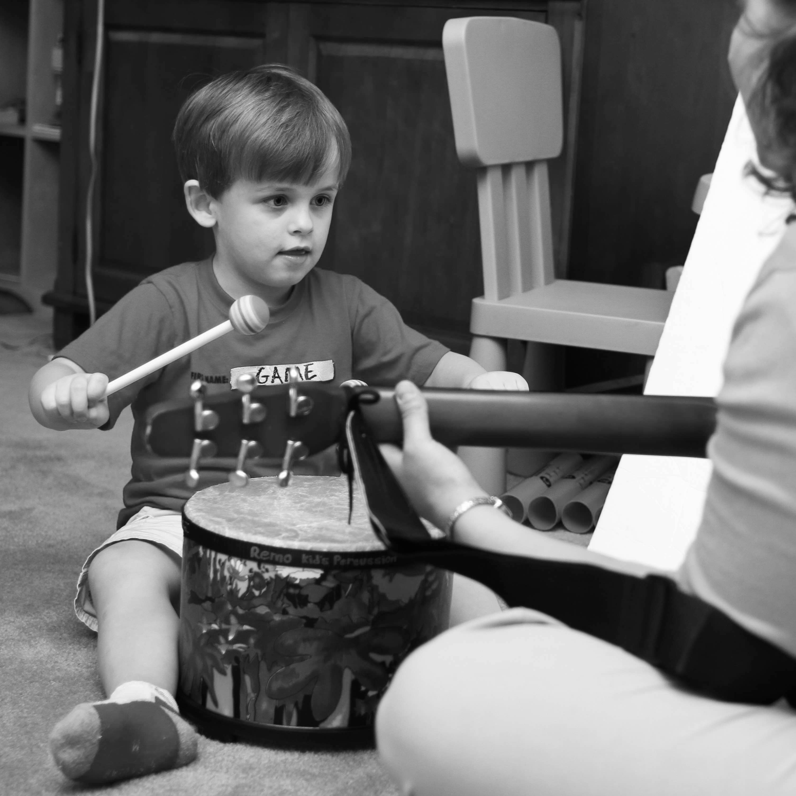

<div class="container">
<h2>Individual Music Therapy Sessions:</h2>

<p>One on one clinical sessions led by a music therapist. Sessions are assessment-based
with a formal treatment plan addressing non-musical goals and focusing on
functional outcomes. 
<br/>
<a class="service-expand-button collapsed" type="button" data-toggle="collapse" data-target="#individual-text" aria-expanded="false" aria-controls="individual-text">Click to learn more &#x3E;&#x3E;</a></p>

<div class="collapse" id="individual-text">
<p>Individual music therapy sessions are tailored to each client's needs, abilities, and
musical preferences. A formal treatment plan is adopted based on an assessment, and
progress on specified goals and objectives is tracked and recorded after each one-on-one
session. Creative approaches and an emphasis on leveraging an individual’s strengths
create an engaging environment, while fostering success. Goal areas addressed may
include communication and speech, cognitive and academic skills, fine and gross motor
skills, social skills, reality orientation and memory recall, self-expression, emotional
expression and support, general well-being, and increased quality of life. Goals,
objectives, and interventions are designed to integrate well with other therapies and
generalize to daily activities. Individual music therapy sessions are 45 or 60 minutes
long and are scheduled on a weekly or bi-weekly basis as consistency is key in ensuring
effectiveness and progress. <a class="service-collapse-button" type="button" data-toggle="collapse" data-target="#individual-text" aria-expanded="false" aria-controls="individual-text">Less &#x3E;&#x3E;</a></p>
</div>

<h2>Adaptive Music Lessons:</h2>
<p>Therapist-led music lessons adapted for individuals with special needs and unique
challenges and specifically tailored to foster success.
<br/>
<a class="service-expand-button collapsed" type="button" data-toggle="collapse" data-target="#adaptive-text" aria-expanded="false" aria-controls="adaptive-text">Click to learn more &#x3E;&#x3E;</a></p>

<div class="collapse" id="adaptive-text">
<p>Bringing together excellent formal musical instruction, a creative approach, and an
understanding of unique learning styles and needs; adaptive music lessons are perfect
for children, adolescents, or adults who want to learn a musical instrument, but have
difficulty succeeding under traditional teaching practices. Adaptive music lessons are
tailored to each student, and lesson plans are customized to take into consideration
special needs and learning styles, as well as the student’s personal goals and musical
preferences. Meeting each student where he or she is at and creating an environment for
success is at the core of each adaptive lesson. Adaptive music lessons are 45 or 60
minutes long and are scheduled on a weekly basis to ensure consistency and progress. <a class="service-collapse-button" type="button" data-toggle="collapse" data-target="#adaptive-text" aria-expanded="false" aria-controls="adaptive-text">Less &#x3E;&#x3E;</a></p>

</div>

<h2>Music Enrichment Sessions:</h2>
<p>Therapist-led wellness sessions designed to enhance quality of life and encourage
musical engagement, without formalized goals and objectives.
<br/>
<a class="service-expand-button collapsed" type="button" data-toggle="collapse" data-target="#enrich-text" aria-expanded="false" aria-controls="enrich-text">Click to learn more &#x3E;&#x3E;</a></p>

<div class="collapse" id="enrich-text">
<p>Designed to increase general well-being, music enrichment sessions are offered for
aging adults and adults with developmental challenges. Developed specifically for those
who do not need or want therapy services, these sessions are recreational in nature,
though still tailored to each client’s musical tastes and preferences. Led by board-
certified music therapists, like all other services, music enrichment sessions serve to
enhance quality of life through musical engagement and may include listening, singing,
instrument play, and dancing. Sessions are 60 minutes long. There is no formal
documentation and session scheduling is flexible. <a class="service-collapse-button" type="button" data-toggle="collapse" data-target="#enrich-text" aria-expanded="false" aria-controls="enrich-text">Less &#x3E;&#x3E;</a></p>
</div>

<h2>Consultative Services:</h2>
<p>Customized consultations designed to teach others how to effectively use music with
the loved ones or clients in their care. Available locally and nation-wide.
<br />
<a class="service-expand-button collapsed" type="button" data-toggle="collapse" data-target="#consult-text" aria-expanded="false" aria-controls="consult-text">Click to learn more &#x3E;&#x3E;</a></p>

<div class="collapse" id="consult-text">
<p>Consultative services are available for caregivers and professionals, both locally and all
over the United States. Music therapy-based consultations focus on teaching others how
to effectively use music with the loved ones or clients in their care. Designed for parents,
guardians, therapists, teachers, and others who work with children, adolescents, or
aging adults; consultative services include strategies, techniques, resources, and music
and material recommendations. Consultative services are based on each client’s unique
needs and are personalized to support the goals and objectives being addressed in other
environments. Consultative services may be booked on a one-time or recurring basis. <a class="service-collapse-button" type="button" data-toggle="collapse" data-target="#consult-text" aria-expanded="false" aria-controls="consult-text">Less &#x3E;&#x3E;</a></p>
</div>

<h2>Musically Engaged Seniors Program:</h2>
<p>Music therapy-based program designed for aging adults in residential communities
and day programs throughout the greater Austin area. Innovative groups address a
variety of needs and are adaptable to a wide range of functional abilities.
<br/>
<a class="service-expand-button collapsed" type="button" data-toggle="collapse" data-target="#seniors-text" aria-expanded="false" aria-controls="seniors-text">Click to learn more &#x3E;&#x3E;</a></p>

<div class="collapse" id="seniors-text">
<p>Musically Engaged Seniors is a customizable music therapy-based program designed to
meet the needs and wants of aging adults in residential communities and day programs
throughout the greater Austin area. Featuring fun, engaging, and interactive groups,
Musically Engaged Seniors offers both traditional music therapy services as well as
innovative wellness groups structured on the principles of music therapy. Versatile and
adaptable, the Musically Engaged Seniors program can be tailored to the needs and
preferences of individuals in Assisted Living, Skilled Nursing, Memory Care, and
Independent Living Communities. Groups feature a mixture of singing, instrument
playing, drumming, hand bells, movement activities, songwriting, creative and cognitive
exercises, etc. and are designed to incorporate new and challenging musical experiences
as well as familiar favorites. Each group is tailored to the specific wants and needs of its
participants and all sessions are adaptable to a wide range of functional abilities. <a class="service-collapse-button" type="button" data-toggle="collapse" data-target="#seniors-text" aria-expanded="false" aria-controls="seniors-text">Less &#x3E;&#x3E;</a></p>
</div>
</div>
